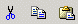

Ausschneiden
Dieser Befehl funktioniert mit Text und Bildern und speichert diese in der
Zwischenablage. Von der Zwischenablage können Sie die Daten in ein
anderes KTML-Fenster einfügen, oder in einen anderen Editor. Dieser
Befehl ist durch das Drücken der Ausschneide-Schaltfläche oder
durch den Shortcut “Strg+X” erreichbar.
Notiz: Im Mozilla
ist dieser Befehl nur durch den Shortcut erreichbar.
Kopieren
Dieser Befehl funktioniert mit Text und Bildern und speichert diese in der
Zwischenablage. Von der Zwischenablage können Sie die Daten in ein
anderes KTML-Fenster einfügen, oder in einen anderen Editor. Dieser
Befehl ist durch das Drücken der Kopier-Schaltfläche oder durch
den Shortcut “Strg+C” erreichbar.
Notiz: Im Mozilla
ist dieser Befehl nur durch den Shortcut erreichbar.
Einfügen
Dieser Befehl fügt Daten aus der Zwischenablage ein. Beachten Sie,
dass Bilder aus anderen Anwendungen nicht mitkopiert werden können,
und separat auf den Server geladen werden müssen. Ist ein Bereich beim
Ausführen dieses Befehls markiert, wird er durch den Inhalt der Zwischenablage
ersetzt. Dieser Befehl ist durch das Drücken der Einfüge-Schaltfläche
oder durch den Shortcut “Strg+V” erreichbar.
Notiz: Im Mozilla
ist dieser Befehl nur durch den Shortcut erreichbar.